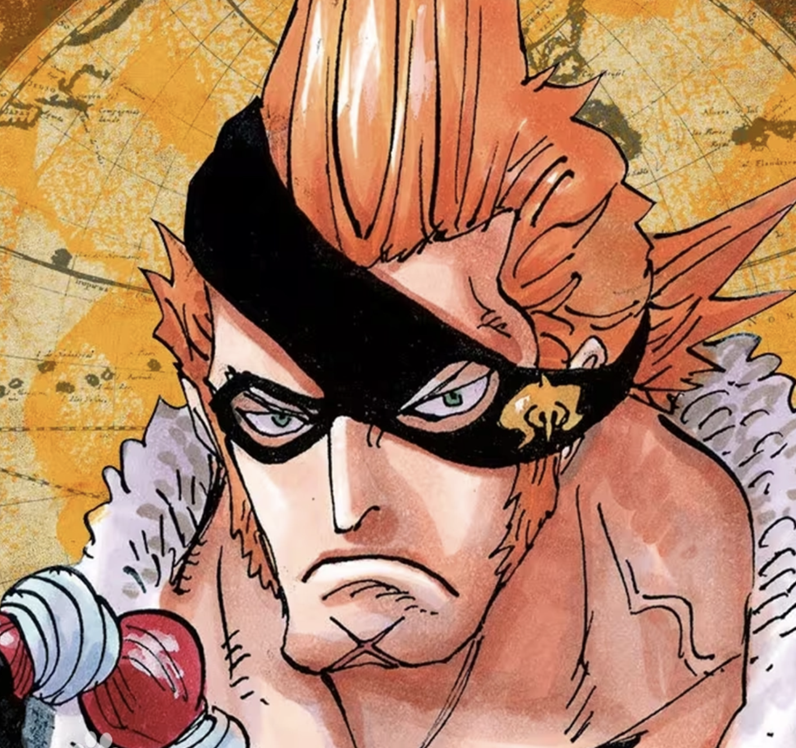
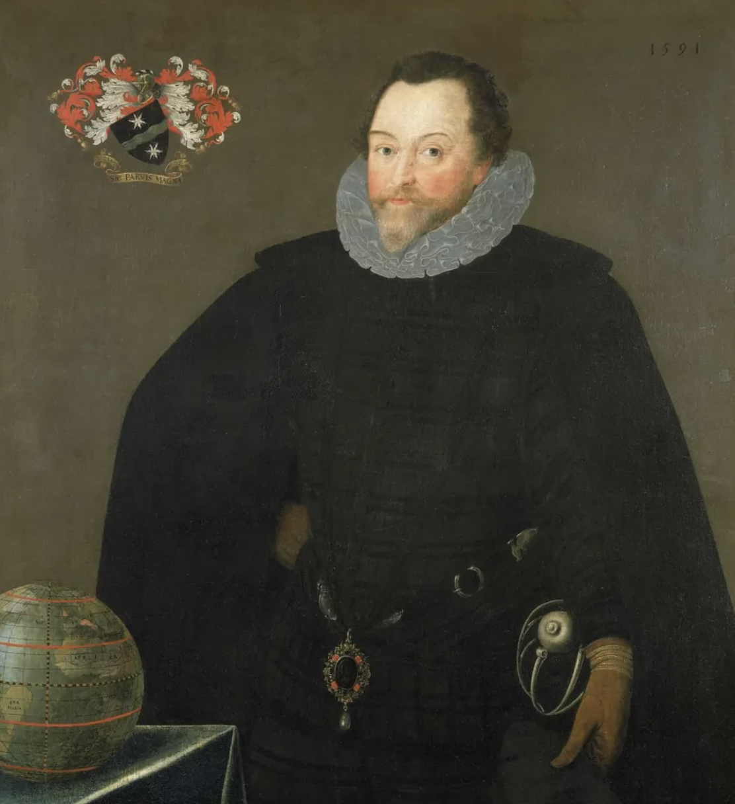
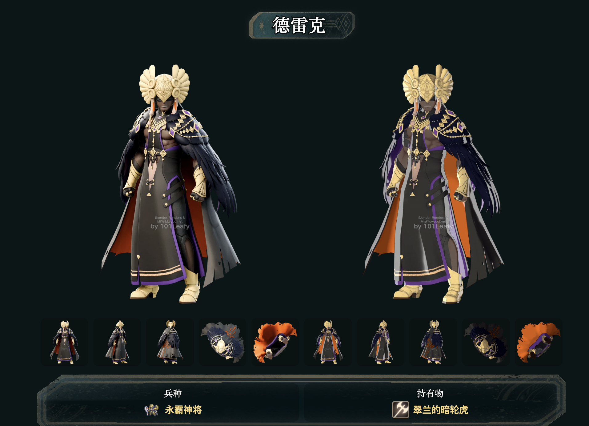
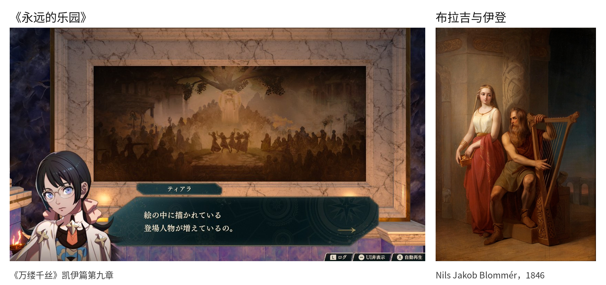
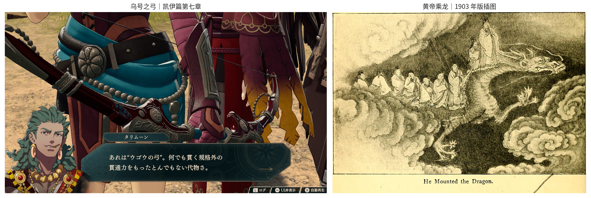
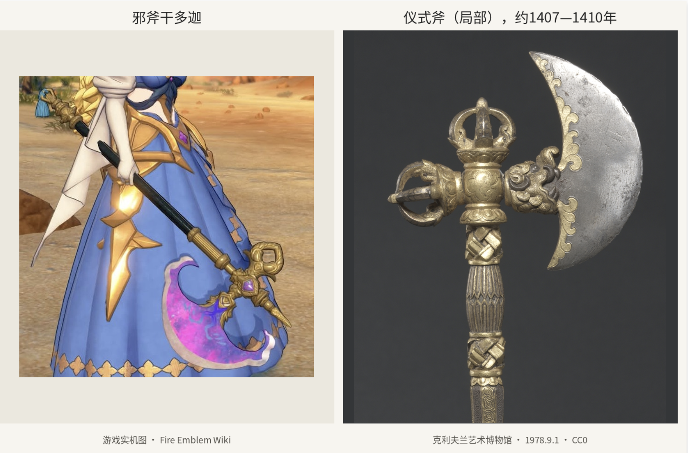
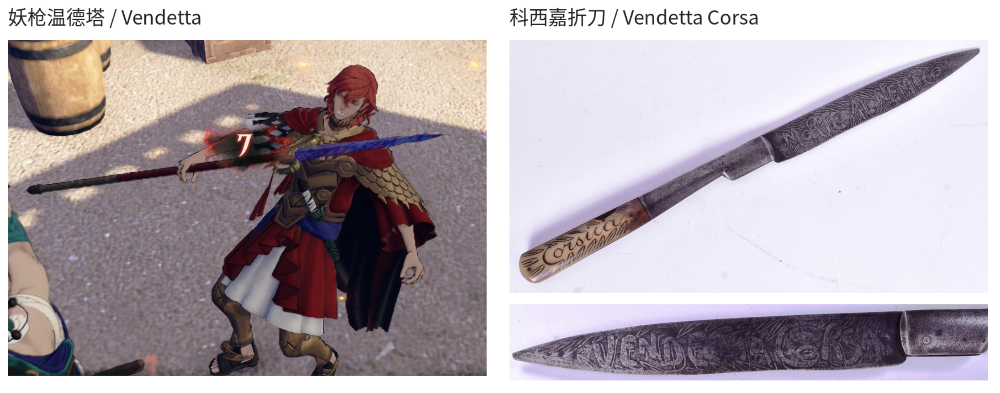
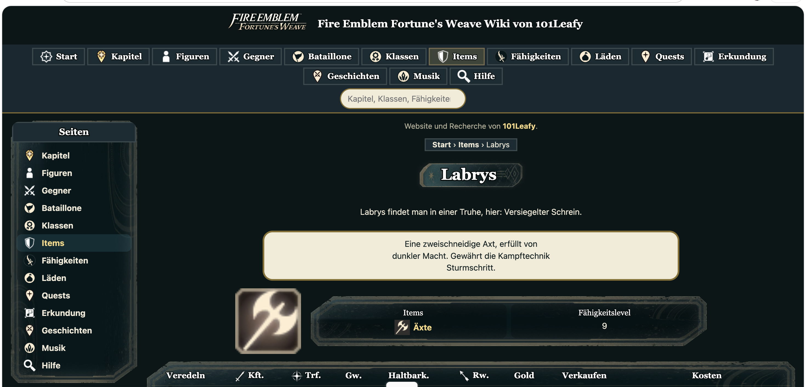
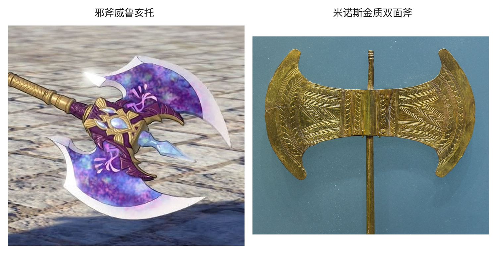

德雷克的财宝——霸罗尔遗骸（下）
德雷克的财宝
在继续介绍这些宝物之前，还可以先看看将它们串联起来的名字——德雷克。
凯伊篇第六章中，欧若拉解释，“德雷克的财宝”大约在五百年前开始出现在历史记载中。海贼德雷克凭借不知从哪里得到的财宝之力，成为达那海的统治者；在他死后，这些宝物又流落到鞑古扎各地。因此，“德雷克”这个名字来自它们曾经的持有者。
德雷克这个名字自然是现实存在的，他是恶魔果实动物系龙龙果实·古代种·异特龙形态的能力者(X)

他是英国航海者弗朗西斯·德雷克（Francis Drake）。现实中的德雷克从事过海盗活动与私掠，后者指获得许可、袭击敌方船只的行动。1577至1580年的环球航行期间，他袭击西班牙船只与港口，取得巨额财富，为英国王室和自己都带来了丰厚收益。1581年，他获封骑士。

游戏中的德雷克也是大海贼。第三部第五章中，赛奥朵拉提到，萨拉弥斯有不少人将德雷克视为义贼与英雄；但见到本人后，她认为这种崇拜可能只是人们对神殿不满，因而把神殿的敌人想象成了自己的英雄。这也让他的名字多了一层可以联想的意味：一个凭海上劫掠获得财富的人，同样可能受到另一方的推崇。

最出名的几个德雷克的财宝自然是几个焰将手里的东西，但是我准备写他们的个人篇章的时候再提，所以这里先写其他人持有的德雷克财宝吧
邪剑佛拉格拉赫
邪剑佛拉格拉赫，日文为「邪剣フラガラッハ」，是德雷克的财宝之一。赛奥朵拉篇第六章中，谭利穆恩原本正与剑客埃思普立商谈购买此剑，巴恩·巴恩却突然袭击，杀死埃思普立并将剑夺走。游戏将它描述为寄宿着冥界黑暗力量的魔弯刀，持有者能够使用战技“月坏”。
它的名字对应爱尔兰传说中的神剑 Fragarach，也写作 Freagarthach，通常译为“应答者”（The Answerer）。在 Gods and Fighting Men 中，鲁格骑着海神玛纳南（Manannán mac Lir）的骏马，穿戴他的甲胄，腰间还佩着这把属于玛纳南的宝剑。书中直接将剑名称作“Freagarthach，The Answerer”，并描述其力量：被它所伤的人无法生还；当它在战场上出鞘时，迎面而来的敌手也会失去抵抗的力量。
迪托利希的“安萨拉”，英文名恰好就是 Answerer。 这把从芙朵拉带来的英雄遗产与德雷克财宝中的佛拉格拉赫，在游戏中是两件来历不同的武器。但从命名来看，“佛拉格拉赫”保留了神话剑名的音译，“安萨拉”则采用了英语释名的音译。于是，同一把神话宝剑的两个名字，在《万缕千丝》中分别进入了“德雷克的财宝”与“英雄的遗产”两套设定。

布拉吉的画笔
布拉吉的画笔是寄宿着冥界黑暗力量的平头笔。凯伊篇第九章中，画家全泽尔借助它的力量，在欧若拉神殿的壁画《永远的乐园》中构筑了可以进入的世界，并将家人与其他人掳入其中。乌尔坦德失踪后，媞雅拉发现画中的人物比之前增加了，而欧若拉也从画中感受到了与凯伊的宝石相同的霸罗尔之力，并随凯伊一起杀入了画中（这应该是我们第一次能操作神将了）。
“布拉吉”对应北欧神话中的诗神布拉基（Bragi）。《散文埃达·欺骗古鲁菲》第二十六章称他以智慧、流畅的辞令与遣词能力闻名，尤其精通诗艺；书中还将表示诗歌、诗艺的 bragr 一词与他的名字联系起来。因此，这个名字本身就带有鲜明的诗歌与语言创作意味。
游戏把这个神名赋予画笔，将诗歌创作的意象延伸到了绘画。

乌号之弓

易尼奥尼持有的乌号之弓，日文名为「ウゴウの弓」，是一把寄宿着冥界黑暗力量的红色魔弓。她后来提到，听说这把弓的弓弦是用遗骸的头发制成的，并感叹仅凭头发就能制造如此强力的武器，复活后的霸罗尔有多么强大，也就可想而知了。“乌号”这个名字，对应的是中国古代的名弓。**《史记·封禅书》**记载，黄帝铸鼎完成后，一条龙降下迎接他升天。未能同行的臣子抓住龙须，结果龙须被拔落，黄帝的弓也随之坠下。百姓仰望远去的黄帝，抱着留下的弓与龙须号哭，于是这张弓便被称为“乌号”。
古籍中的“乌号”也与良弓的射力有关。《韩诗外传》卷八把“乌号之柘”列为制弓的上等材料，并讲到齐景公依照弓人妻的指点调整射法后，能够一箭“穿七札”。这则故事强调的是良材与射术的配合。
游戏中的乌号之弓，则拥有超乎寻常的贯穿力。凯伊篇第七章中，谭利穆恩确认它属于德雷克的财宝，并根据听闻的传说，称它能够贯穿任何目标。这一特点也体现在战斗机制里：它的战技**“穿破”可以无视敌人的防御力，但不能追击**。
邪斧干多迦
邪斧干多迦，日文为「邪斧ガンドギャ」，是德雷克的财宝之一，可以从沙影堡垒的宝箱中取得。游戏将它描述为寄宿着冥界黑暗力量的单刃斧，并赋予战技“魔裂”：面对装备魔法的敌人时，命中提高10、攻击力提高15。
这把斧头最值得注意的，是月牙形斧刃背后那个镂空的金色构件，柄端也有相似的装饰。**这种将弧形斧刃与金刚杵状构件组合起来的造型，可以与藏传佛教的仪式斧作对照。**洛杉矶郡艺术博物馆在介绍同类仪式斧时，便明确说明了斧刃、柄与五股十字金刚杵之间的结构关系。

右图是克利夫兰艺术博物馆收藏的一件仪式斧，年代约为1407至1410年，长40.4厘米，以铁合金制作并错饰金银。它的一侧伸出弧形斧刃，另一侧与顶端则配有金刚杵形构件。根据馆方说明，这类仪式兵器用于密教仪轨，对治无明、妄念、自私等阻碍觉悟的因素。
妖枪温德塔
妖枪温德塔，日文为「妖槍ヴェンデッタ」，是吉尔奇鲁斯持有的一把蛇腹枪。“温德塔”对应 Vendetta，这个意大利语单词的意思就是“复仇”（拉丁语 vindicta）。
Vendetta 还带有更具体的一层含义：家族血仇。《法兰西学院词典》将它解释为
两个家族或氏族之间的持续敌对：一次冒犯引起双方互相报复，仇恨甚至延续几代人。这种行为以“荣誉之债”为依据，要求以冒犯偿还冒犯，以杀戮偿还杀戮。于是，仇怨会成为活着的亲属必须继续承担的责任。
梅里美在1840年的小说 《高龙巴》（Colomba） 中，就把这种压力写得很具体。高龙巴先将父亲留下的弹药带、短剑和手枪交给哥哥奥索，后来又带他来到父亲遇害之处。返家以后，她取出染血的衬衣与两颗发黑的子弹，催促哥哥为父亲报仇。在这段叙事中，死者留下的器物成了催逼复仇的凭证：亲人接过武器的同时，仿佛也接过了一笔尚未偿还的血债。
Vendetta 还是一种现实刀具的名称。《法兰西学院词典》另列的一个释义，便是一种19世纪出现的科西嘉式折刀：刀刃平直，可以折叠，而且经常带有刻字。

邪斧威鲁亥托
日文为「邪斧ヴェルハイト」，英文名为 Velheit，是德雷克的财宝之一。游戏将它描述为寄宿着冥界黑暗力量的双刃斧，可以使用战技“风暴步法”。

德语版没有音译，而是直接将这把斧称为 Labrys（双面斧）。这种斧在中央装柄，两侧各伸出一片对称的斧刃，在克里特岛的米诺斯文明遗存中尤其引人注目。 将游戏立绘与出土实物对照，能看到非常清晰的形制传承：威鲁亥托保留了双面斧中央收窄、双刃相背展开、弧形刃缘向两侧扩张的经典几何轮廓；在此基础上，游戏美术加入了中央宝石、轴向尖刺与暗紫色刃面，让这件古老兵器呈现出奇幻魔具的样貌。需要说明的是，Labrys 是一类器物的统称，并非某件特定神器的专名。大英博物馆的藏品说明直接将其解释为“双面斧”；古希腊作家普鲁塔克在《希腊问题》第 45 节探讨“卡里亚的宙斯神像为何持斧”时也留下记录，称吕底亚人把斧叫作 labrys，可见这一称谓的历史渊源还延伸到了小亚细亚地区。 回到最典型的克里特岛米诺斯遗物中，双面斧其实兼具实用与宗教双重身份。大英博物馆指出，除了用于日常劳作的工具版本外，考古还发现过一些大型青铜双面斧——它们因斧身过薄而无法承担实际劈砍，另一些由不同材料制成的小型双面斧，则被作为奉献物留在圣所或墓葬中。同一种斧形，既服务于世俗生活，也承载着宗教仪式的象征意义。

至于 Velheit 这个名字。Gerhard Köbler 的《中古高地德语词典》收录了同形词 velheit，另有 felheit 的写法，释义“恶意、邪恶”。